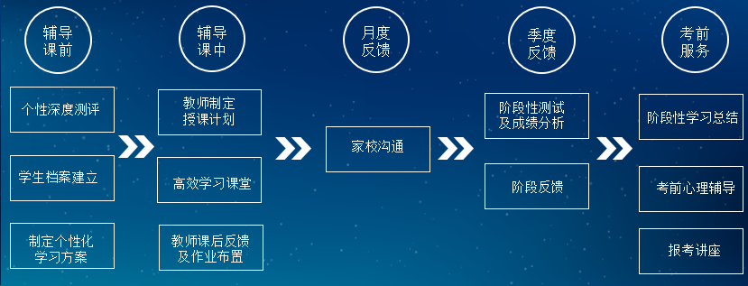

<div class="wrap mt30 pb60 ovh">
  <div class="content lh26">
    <p class="in28"></p>
    <p>&nbsp; &nbsp; &nbsp; 卓越教育一对一个性化辅导中心结合多年的一线教育经验以及学科教研、心理研究，针对大中城市中小学生心理及学习特征，实施有效的辅导方案。经验教师一对一授课，切实做到学科与心理相结合，知识传授与方法、思维培养并重。经辅导的学生成绩提高幅度大，在学习态度、方法和习惯上都有明显的改善。&nbsp;&nbsp;<br>
      <br>
      <span style="font-size:14px;"><strong>■</strong>&nbsp;<strong>辅导内容</strong></span><br>
      <strong>所有文化科</strong>：语文、数学、英语、物理、化学、政治、历史、地理、生物等。<br>
      <strong>辅助内容：</strong>心理、心态、沟通、家庭教育、行为纠正、升学指导。<br>
      <br>
      <span style="font-size:14px;"><strong>■</strong>&nbsp;<strong>辅导理念：教育最大的技巧是——“知所启发”</strong>&nbsp;</span><br>
      <strong>知所：</strong>知道其所以然，也就是经过分析找到其目前的状况以及造成目前学习问题的真正原因所在。<br>
      <strong>启发：</strong>教育重在启发，也就是在教育辅导过程中，不是仅简单地讲授知识，而是重在方法、思维的启发与培养。<br>
      <br>
      <span style="font-size:14px;"><strong>■</strong>&nbsp;<strong>五大优势</strong></span></p>
    <p><strong>个性深度测评：</strong>对学生的学习基础及思维、学习方法及习惯、心理等非智力因素等进行全面专业测试，找到学习问题的真正原因。</p>
    <p><strong>3+X</strong><strong>精准教学系统：</strong>通过全方位了解孩子的特点，匹配最合适的老师，为每一个孩子量身设计辅导方案。 &nbsp;</p>
    <p><strong>牛师帮匹配选师平台：</strong>仅通过手机端便可全面了解卓越教育一对一全市近千名牛师，快速找到与孩子相匹配的牛师，更可直接在上面报名续费、查看课表、查看课堂反馈和对牛师进行评价等。</p>
    <p><strong>19</strong><strong>年丰富的教学实践：</strong>19年来重点研究“如何让学习更高效、更精准”、“学力如何形成”和“个体成长关注”三个课题，建立了完善的教学质量保障系统。</p>
    <p><strong>逾10万成功案例：</strong>成立19年以来，已有逾10万学生在卓越教育一对一取得理想的学习进步效果。</p>
    <p>&nbsp;</p>
    <h2>
■&nbsp;<strong>卓越教育一对一服务流程</strong></h2>
    <p></p>
    <p align="left">辅导课前：个性深度测评、学生档案建立、制定个性化学习方案</p>
    <p align="left">辅导课中：教师制定授课计划、高效学习课堂、教师课后反馈及作业布置</p>
    <p align="left">月度反馈：家校沟通</p>
    <p align="left">季度反馈：阶段性测试及成绩分析、阶段反馈</p>
    <p>考前服务：阶段性学习总结、考前心理辅导、报考讲座</p>
    <p></p>
    <p class="mt20" style="text-align: center;"><a href="http://www.zy.com/" class="bont1" target="_blank">立即报读</a></p>
  </div>
</div>
